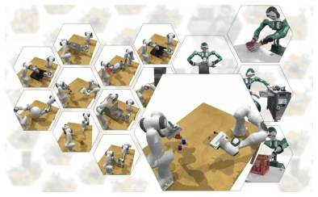
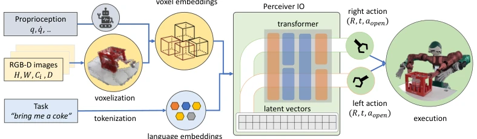

This paper supplements the dual-arm manipulation field, but the results are not stunning. The authors extended RLBench [1] as a benchmark, creating 13 tasks, which is much richer than the dual-arm tasks in Robosuite [8] and ManiSkill2 [10]. The PerAct2 model is essentially behavior cloning, using a single network to predict dual-arm actions, consuming less VRAM than independent Agents or Leader-Follower approaches while enabling implicit coordination. However, the simulation success rate is merely 16.8%, and real-world experiments only demonstrated 4 tasks, far from achieving 'generalization'. Do not be misled by 'Learning'; the core contribution lies in the benchmark, as the algorithm itself still struggles with complex coordination tasks, such as collisions during handovers, and relies on a motion planner. Although claimed to be robot-agnostic, the real-world testing only utilized the ARMAR-6 model, so generalization remains questionable. Overall, it is a solid benchmark, but the algorithm itself is far from 'general dual-arm intelligence'; do not be misled by 'Learning' in the title, as it is essentially behavior cloning.
Dual-arm operation is challenging due to spatiotemporal coordination, being much more complex than single-arm manipulation. Existing RLBench [1] only supports single-arm, while Robosuite [8] and ManiSkill2 [10] have too few dual-arm tasks for systematic evaluation. Although real-world experiments are rich, such as those by Zhao et al. [5], they are not reproducible due to excessive variables. The authors aim to fill this gap by creating a reproducible simulation benchmark with diverse tasks, while also evaluating how existing methods (such as ACT or PerAct [2]) perform on dual-arms. They found that simply running two independent Agents is ineffective; coordination must be learned, thus PerAct2 was proposed.

Figure 1: Selected bimanual tasks from the bench- mark as well as real-world examples. Due to the architecture design the method can easily be trans- ferred to other robots as the policy outputs a 6-D pose and is agnostic to the underlying controller.
The overall architecture is VLA, with inputs including proprioception, RGB-D, and language. RGB-D is fused into a voxel grid, and language embeddings are fed into a PerceiverIO transformer. The innovation lies in a single network with dual outputs, unlike PerAct-LF which acts separately. It uses combined self-attention to allow interaction between left and right arm latent spaces, sharing voxels and proprioception. The output consists of discrete 6-DoF actions (position, rotation, gripper, obstacle avoidance). Training employs behavior cloning, with keyframe extraction adapted for dual-arms (gripper change or trajectory end). This avoids VRAM waste and fixed roles associated with independent Agents, allowing the model to implicitly learn coordination.

Figure 2: The system architecture. PerAct2 takes proprioception, RGB-D camera images as well as a task description as input. The voxel grid is constructed by merging data from multiple RGB-D cameras. A PerceiverIO transformer is utilized to learn features at both the voxel and language lev- els. The output for each robot arm includes a discretized action, which comprises a six-dimensional end-effector pose, the state of the gripper, and an extra indicator whether the motion-planner should use collision avoidance.
Simulation used Franka Panda, real-world used ARMAR-6 [34]. Compared against ACT, RVT-LF, and PerAct-LF. Metrics focused on success rate and training time. PerAct2 won 9 out of 13 tasks, with an average success rate of 16.8%, outperforming ACT's 5.9%. Training time was 54 hours, faster than RVT-LF's 231 hours. Real-world demonstrations covered 4 tasks, proving robot-agnostic capability. Failures were mainly due to handover collisions, inaccurate grasps, and drawers not opening. This indicates dual-arm coordination is difficult, and discrete actions rely on a motion planner.